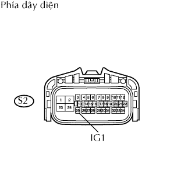
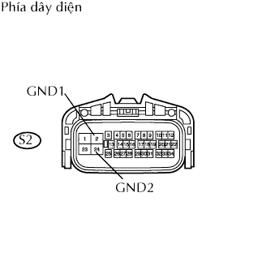

DTC C1241/41 Điện áp dương ắc quy Thấp hoặc điện áp dương ắc quy cao bất thường |
| Số mã DTC | Điều kiện phát hiện DTC | Khu vực nghi ngờ |
| C1241/41 | Khi phát hiện một trong các điều kiện sau đây: 1. Cả hai điều kiện liên tục trong ít nhất là 10 giây
|
|
| 1.KIỂM TRA CẦU CHÌ (ECU-IG & GAUGE) |
Tháo cầu chì ECU-IG & GAUGE ra khỏi hộp rơle bảng táplô.
Đo điện trở của cầu chì.
|
| ||||
| OK | |
| 2.KIỂM TRA ẮC QUY |
Kiểm tra điện áp ắc quy.
| Kết quả | Đi đến |
| Điện áp ắc quy là bình thường (khi dùng máy chẩn đoán) | A |
| Điện áp ắc quy là bình thường (khi không dùng máy chẩn đoán) | B |
| Điện áp ắc quy không bình thường | C |
|
| ||||
|
| ||||
| A | |
| 3.ĐỌC DANH SÁCH DỮ LIỆU (TÍN HIỆU STP, ĐIỆN ÁP ST1) |
Dùng danh sách dữ liệu, hãy kiểm tra chức năng chính xác của điện áp nguồn ECU IG.
| Hạng mục | Hạng mục/Phạm vi đo (hiển thị) | Điều kiện bình thường | Chú ý chẩn đoán |
| ECU IG Power Voltage | Điện áp cấp nguồn cho ECU / TOO LOW / NORMAL / TOO HIGH | QUÁ CAO: Lớn hơn 14 V BÌNH THƯỜNG: 10 đến 14 V QUÁ THẤP: Dưới 10 V | - |
| Kết quả | Đi đến |
| Hiển thị là BÌNH THƯỜNG | A |
| Hiển thị là không BÌNH THƯỜNG | B |
|
| ||||
| A | ||
| ||
| 4.KIỂM TRA DÂY ĐIỆN (ECU ĐIỀU KHIỂN TRƯỢT - ẮC QUY) |
|  |
Ngắt giắc nối S2 của ECU.
Bật khoá điện ON.
Đo điện áp của giắc nối phía dây điện.
| Nối dụng cụ đo | Điều kiện tiêu chuẩn |
| S2-25 (IG1) - Mát thân xe | 10 đến 14 V |
|
| ||||
| OK | |
| 5.KIỂM TRA DÂY ĐIỆN (ECU ĐIỀU KHIỂN TRƯỢT - MÁT THÂN XE) |
|  |
Ngắt giắc nối S2 của ECU.
Đo điện trở của giắc nối phía dây điện.
| Nối dụng cụ đo | Điều kiện tiêu chuẩn |
| S2-2 (GND1) - Mát thân xe | Dưới 1 Ω |
| S2-24 (GND2) - Mát thân xe | Dưới 1 Ω |
|
| ||||
| OK | |
| 6.KIỂM TRA XEM MÃ DTC CÓ TÁI XUẤT HIỆN KHÔNG |
Xóa các mã DTC.
Lái xe với tốc độ 30 km/h (19 mph) hay cao hơn trong 60 giây hay lâu hơn.
Kiểm tra các mã DTC.
| Kết quả | Đi đến |
| DTC phát ra | A |
| DTC không phát ra | B |
|
| ||||
| A | ||
| ||